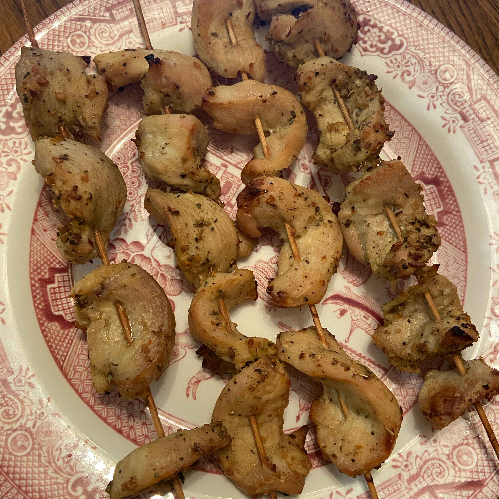

Greek Chicken Skewers

Description
Simple, easy to make, yet absolutely delicious greek inspired chicken skewers are ready quickly! Tons of flavor! The left over marinade is also great on grilled vegetables, so inject a little mediteranean delight to your boring old chicken dinner tonight!
Ingredients
- 1/4 cup lemon juice
- 1/4 cup wok oil
- 1/8 cup red wine vinegar
- 1 tblspn onion flakes
- 1 tblspn minced garlic
- 1 lemon, zested
- 1 tspn Greek seasoning
- 1 tspn poultry seasoning
- 1 tspn dried oregano
- 1 tspn ground black pepper
- 1/2 tspn dried thyme
- 3 skinless, boneless chicken breasts
- 8 bamboo skewers, soaked in water for 30 min
Steps
- Add chicken, coat with the marinade, squeeze out excess air, and seal the bag. Marinate in the refrigerator for at least 2 hours.
- Preheat the oven to 350 degrees F (165 degrees C).
- Remove chicken from the mariande and shake off excess; thread onto skewers. Discard the remaining marinade. Place the skewers on a baking sheet.
- Roast in the preheated oven until golden brown, about 20 minutes.